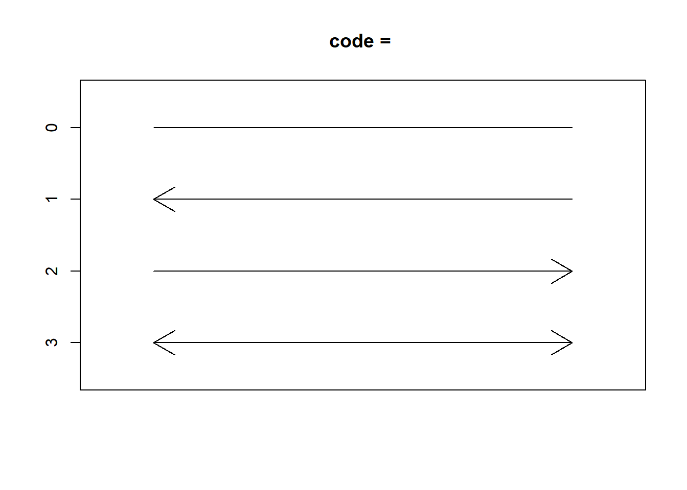
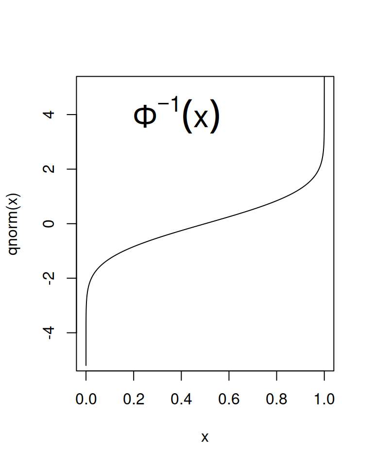
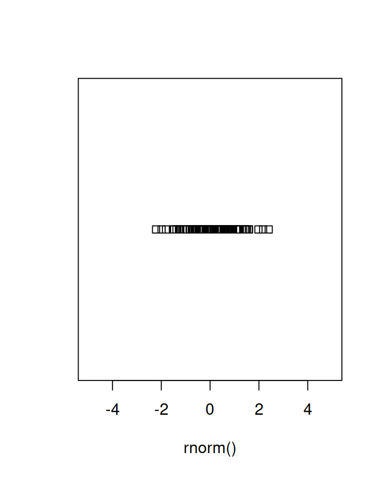
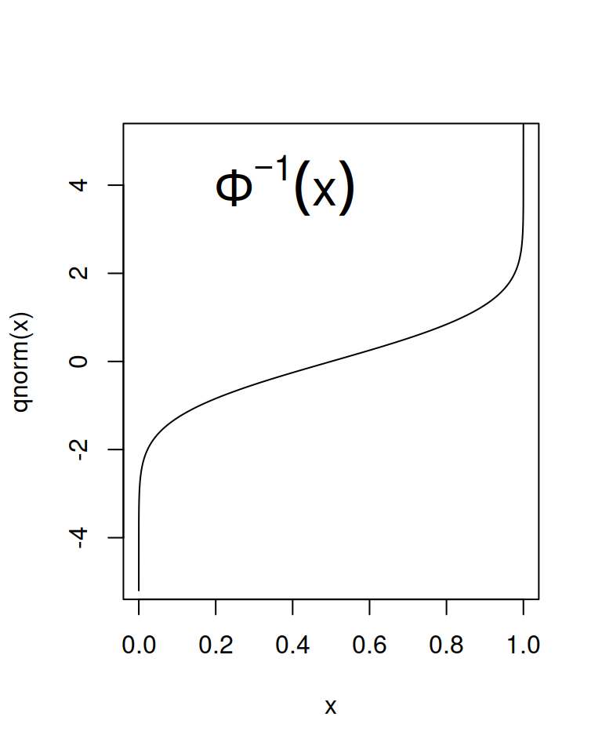
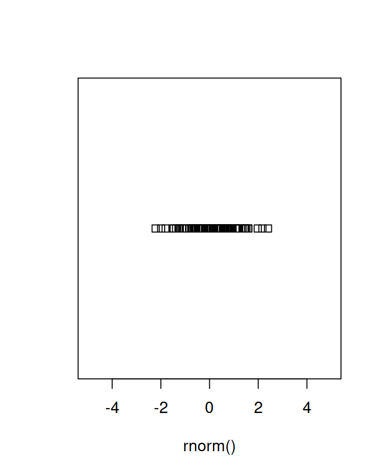

Chapter 21 Basics2
21.1 Distributions
dDensity (pdf, pmf)pProbability (cdf)qQuantilerRandom
 

Continuous
dbetaBetadbinomBinomialdcauchyCauchydchisqChi-SquaredexpExponentialdfFdgammaGammadgeomGeometricdhyperHypergeometricdlogisLogisticdlnormLog NormaldnbinomNegative BinomialdnormNormaldpoisPoissondtStudent tdtukeyStudentized RangedunifUniformdweibullWeibulldwilcoxWilcoxon Rank Sum StatisticdsignrankWilcoxon Signed Rank Statistic
Discrete
dbinomBinomialdgeomGeometricdhyperHypergeometricdbinomNegative BinomialdpoisPoisson
21.1.1 Relationships between distributions
\[ \text{Standard Norm}:\quad Z \]
\[ \chi_n^2:\quad X = (Z_1^2 + Z_2^2 + \cdot + Z_n^2)/n \]
\[ F_{n,m}:\quad F = \frac{X_n^2}{X_m^2} \]
\[ t_m:\quad \frac{Z}{\sqrt{\frac{X_m^2}{m}}} \] Cauchy: Special case of \(t\) distribution